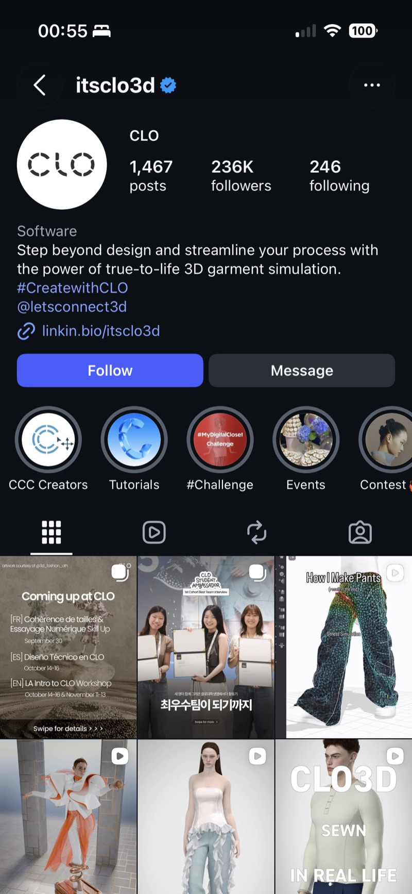
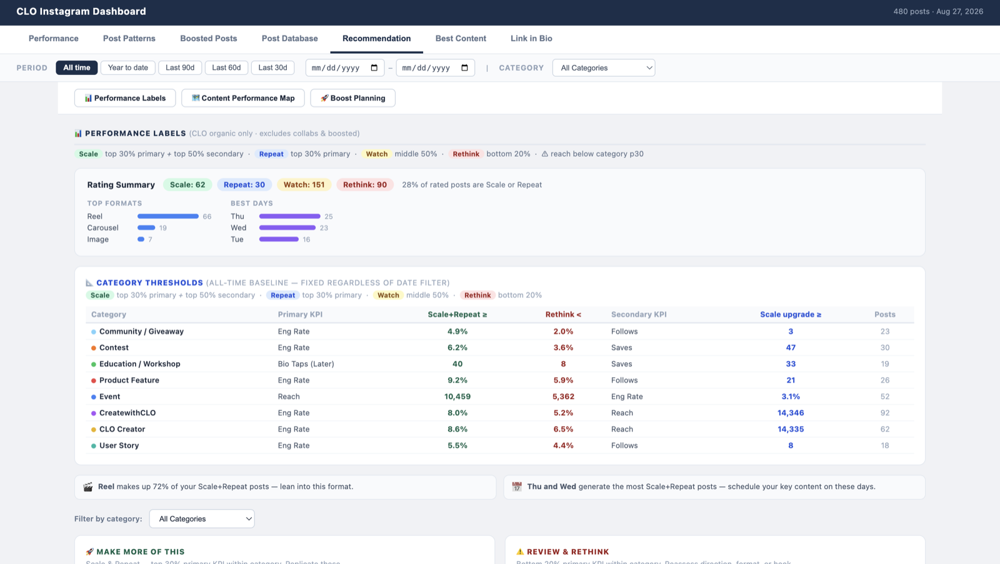
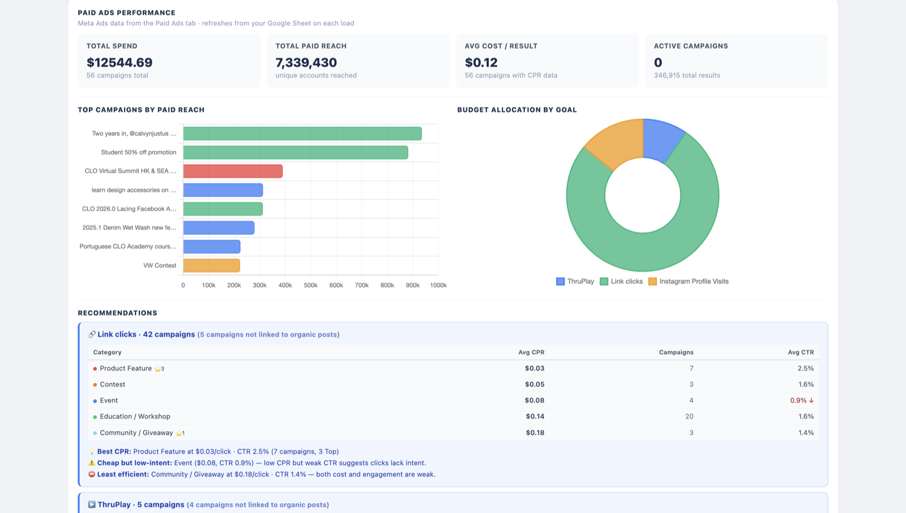
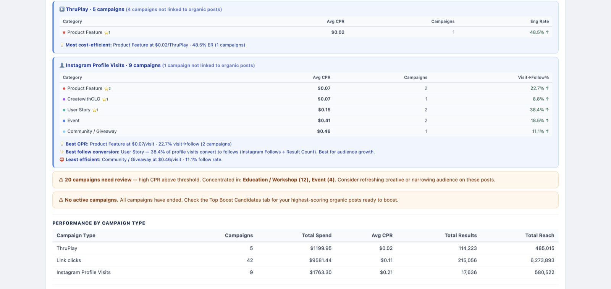
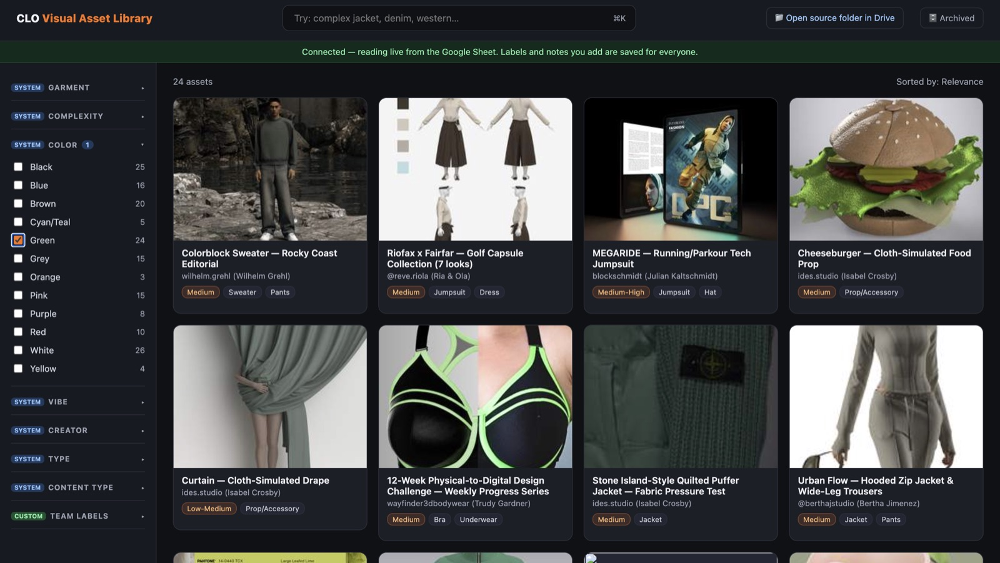
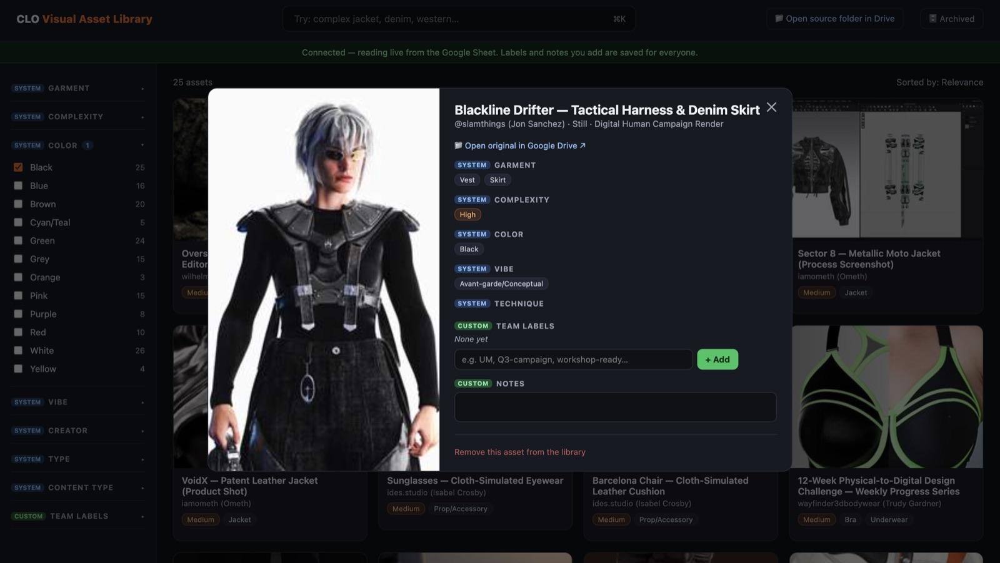

One
2026.0 Feature Launch — Creator Collective
CLO's 2026.0 release shipped a wave of new tools at once — lacing, gluing, sketch-on-avatar, fabric-aware strain maps, a pattern drafter, footwear tools, fur rendering. A single generic announcement post wasn't going to make any one of those land with the specific creators who'd actually care about it.
I ran the creator-facing side of the rollout. For each feature, I sat down with the Product team first to confirm exactly what was shipping and why it mattered — then turned that into a storyboard, got Product's sign-off on accuracy, and briefed a creator whose niche matched the feature (footwear specialists for the footwear tools, pattern-focused creators for the drafter, and so on). It was a three-step loop, repeated for every feature: align with Product, storyboard and get it approved, then brief the creator and produce.
The "2026.0 Lacing" post — a corset-lacing tool demo — is the clearest example of it working: 4,073 likes, 447 shares, and one of the highest-performing organic posts of the cycle. Across the 2026.0 push, the program's videos reached 250K+ accounts and drove 50K+ engagements in total.

Two
Instagram Performance Dashboard — From Descriptive to Diagnostic
Before this, "how's our content doing" meant scrolling Instagram Insights and eyeballing it. I built a dashboard that turned that into an actual decision system.
Every post — 480 of them at last count — gets automatically sorted into Scale / Repeat / Watch / Rethink, using thresholds I set separately for each of 8 content categories (Product Feature, Contest, Event, Education/Workshop, Community/Giveaway, CLO Creator, CreatewithCLO, User Story), because a "good" engagement rate for a giveaway post and a good one for a product feature post are not the same number. The dashboard then surfaces what to actually do about it: Reels make up 72% of everything in the Scale+Repeat tier, so that's the format to lean into; Thursday and Wednesday post the best; 20 campaigns are currently flagged as needing creative review because their cost-per-result is above the category threshold.
I paired this with a UTM- and pixel-based paid media view — tracking $12,544.69 in spend and 7.34M in paid reach back to the specific creator content and campaigns that drove it, at an average $0.12 cost per result. That let us see, for the first time, not just "this post did well" but "this post did well and here's what it cost to get there and which platform tactic actually earned it."
posts auto-classified across 8 content categories
paid reach traced back to source content
average cost per result



Three
AI Asset Tagging — Visual Asset Library
CLO's creator-made renders — hundreds of them — lived in a Google Drive folder that maybe three people knew how to navigate. If you wanted "a complex jacket in green," you were opening folders one at a time.
I designed an automated tagging pipeline: ffmpeg to process the image and video assets, and a visual LLM to classify them by garment type, complexity, color, and aesthetic vibe. I piloted it on 500 assets and validated the accuracy was solid before proposing it as the path to scale tagging across the full library. The system now backs a live, searchable asset library connected to a Google Sheet, where anyone on the team can type "complex jacket, denim, western" and get exactly that, with the AI-generated tags sitting alongside space for the team to add their own custom labels and notes.


